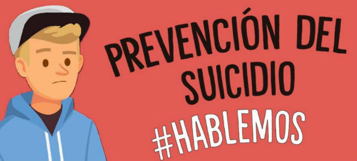

Luego de la pandemia como profesionales de la salud, hemos obervado como los niños, niñas y adolescentes se encuentran en mayor vulnerabilidad para cometer algun tipo de acto suicida. Debido al incremento de estos actos suicida en esta poblacion el ministerio de salud en septiembre del 2021 lanzo una propuesta para prevenir esta propuesta, el ministro de salud indico que en la última década las muertes por suicidio han ido en aumento; en 2019 se presentaron 30.709 casos de intento de suicidio (84 casos día) y 2.550 muertes por esta causa (7 casos día), con afectación principalmente en adolescentes y jóvenes. como principales factores desencadenantes se encontro: conflicto con pareja/expareja (31,8 %), problemas familiares (28,3 %) y problemas económicos (12,17 %); los mecanismos mas comunes para llevar a cabo este acto son: intoxicación (68 %), arma cortopunzante (21 %) y asfixia (7,7 %), de acuerdo con lo registrado en el SIVIGILA (Ministerio de salud, 2021).

- La muerte de un ser querido
- Haber presenciado un suicidio
-Presenciar o sufrir maltrato fisico y psicologico
- Un cambio de entorno familiar o habitual (escuela o vecindario) o el alejamiento de los amigos
- Sufrir acoso en el ambiente escolar
- El fracaso escolar
- Conflicto en las relaciones interpersonales
- Trastornos psquiatricos
- Consumo de sustancia psicoactivas
Es de aclarar que estos factores no siempre conducen al suicidio entre los menores, simplemente son factores que predisponen al menor a que lleve a cabo esta conducta.